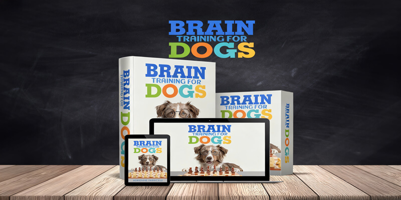

Your Dog Isn't Ignoring You. Their Brain Is Just Bored.
The 10-minute brain game that tired my dog more than a two-hour walk - and completely changed how we connect.
I used to think my dog was stubborn. Turns out, he was just understimulated. His body was tired, but his brain? Starving.
I didn’t realize it then, but I was trying to fix the wrong problem.
The moment I learned the difference between physical exhaustion and mental engagement, everything changed. Within two weeks, the barking dropped off. The pulling stopped. He started checking in with me naturally, not because I drilled commands, but because his brain finally had something to do.
And the best part? It didn't take hours of training or expensive private sessions. Just ten minutes a day of the right kind of game. The kind that professional trainers have been using for years but most dog owners never hear about.
Why Mental Stimulation Beats Traditional Obedience Training
Most dog training focuses on obedience: sit, stay, heel, come. But repetition alone doesn't solve the real problem (a bored brain looking for something to do).
Dogs are natural problem-solvers. When that mental energy builds up with no outlet, it turns into barking, chewing, restlessness, or anxiety. You can walk them for miles, but if their mind isn't challenged, the stress stays.
Here's what recent studies and modern trainers agree on: mental stimulation calms dogs faster than physical exercise. That's because thinking burns energy differently. It's the kind of tired that feels satisfying, not draining.
The good news? You don't need fancy equipment or private lessons to tap into this. You can start right now, in your living room, with a few treats and five to ten minutes a day.
See the exact method trainers use to calm even high-energy dogs at home.
Brain Game #1: The Airplane Game (Builds Focus & Calm)
This foundational game teaches your dog to focus on you even when distractions are present. It works by building impulse control and strengthening the connection between you and your dog. Dogs who master this game show dramatic improvements in walk behavior, reduced reactivity to sounds, and better overall attention span.
Try This in 10 Minutes Today
- Find a quiet space: Start in your living room or backyard with minimal distractions. Have 10-15 small treats ready.
- Get your dog's attention naturally: Say their name once. The moment they look at you, mark it with "Yes!" and immediately give a treat.
- Build duration: Now wait for them to look at you on their own. The instant they make eye contact without prompting, mark and reward.
- Add the "Airplane" element: Hold a treat in your hand and slowly move it in an arc (like an airplane banking) from their nose to your eyes. When they follow the treat to look at your face, mark and reward.
- Practice 5-minute sessions: Repeat 10-15 times per session. Most dogs "get it" within 2-3 sessions and start checking in with you automatically.
❌ Common Mistakes to Avoid
- Repeating your dog's name multiple times when they don't respond
- Using treats that are too large or high-value initially
- Practicing when your dog is overstimulated or tired
Most owners are shocked the first time their dog holds eye contact on their own. It's like they suddenly remember you exist.
Expected outcome: Within two or three days, most dogs become noticeably more focused during walks and less reactive to sounds.
This is just one of 21 progressive games in Brain Training for Dogs
💡 Quick Training Tip
Keep all training sessions short and sweet. 10 to 15 minutes maximum. Dogs learn better in focused bursts than long, boring drills. Quality over quantity wins every time.
Brain Game #2: Jazz Up & Settle Down (Teaches Self-Control Without Punishment)
If your dog can't seem to calm down (jumping on guests, spinning after playtime, barking at the door), this game builds emotional balance. It trains their nervous system to switch from excitement to calm on cue.
Here's how to do it:
- In a quiet room, have your treats ready.
- "Jazz up" your dog for 10-15 seconds: talk in an excited tone, move your hands, encourage energy.
- Then freeze. No talking, no movement.
- The moment your dog stops moving, say "Yes" and calmly reward.
- Repeat the cycle 5-6 times, then add verbal cues: "Jazz up!" followed by "Settle."
❌ Common Mistakes to Avoid
- Getting your dog TOO excited during "jazz up" phase
- Not waiting long enough for the "settle"
- Rewarding while they're still moving
Why it works: Dogs don't learn calmness through restraint. They learn it through contrast. This exercise teaches them to self-regulate, not because you forced them, but because they learned how to shift gears mentally.
Expected outcome: After a few days of practice, you'll notice calmer greetings, faster relaxation after play, and fewer meltdowns during overstimulating moments.
Learn how professional trainers use this exact exercise inside Brain Training for Dogs
Brain Game #3: The Bottle Game (Reduces Anxiety & Boosts Confidence)
Anxious or reactive dogs need a sense of control. This simple scent game channels that nervous energy into curiosity and confidence.
Try this:
- Take 3-5 empty plastic bottles (remove the caps).
- Put a few treats inside one of them, then scatter them all on the floor.
- Encourage your dog to "Find it!"
- When they interact with the bottle containing treats, reward with excitement.
- Gradually add more bottles or move the "loaded" one to make it harder.
❌ Common Mistakes to Avoid
- Leaving bottle caps on (choking hazard)
- Making it too difficult too fast
- Not supervising the session
This activates the searching part of the brain (the same system that releases dopamine and reduces anxiety). Most dogs finish this exercise visibly calmer than they started.
Expected outcome: Most dogs become noticeably more relaxed after just one session. With regular practice, anxious behaviors decrease significantly.
See how structured scent games fit into the full 21-game system
Why Brain Games Work So Fast
The real secret isn't in the tricks themselves. It's in what they teach your dog's brain to do.
Mental exhaustion beats physical exhaustion. Ten minutes of focused problem-solving can relax a dog more than a 30-minute walk. It engages their natural instincts, forces them to think, and leaves them mentally satisfied in a way that fetch never will.
They're fun. Your dog wants to engage with you. These games make learning feel like play, not work.
They transfer to real life. When your dog practices focus, impulse control, and calmness in games, those habits carry over naturally to walks, greetings, and downtime at home. The dog who masters the Airplane Game is the same dog who stops pulling on walks. The dog who nails Jazz Up & Settle Down is the same dog who stops jumping on guests.
It's not magic. It's brain training.
The Program Behind These Games
Brain Training for Dogs by Adrienne Farricelli, CPDT-KA
A structured, gentle at-home program that helps you build a calmer, more focused, happier dog through short, science-based games.
What You'll Get:
- 📚 7 progressive training modules (from Preschool to Einstein)
- 🎮 21+ brain games with video demonstrations
- 📖 Behavior-specific training manual
- 🎯 Bonus trick-training lessons
- ♾️ Lifetime access + 60-day money-back guarantee
Why It Stands Out: Adrienne Farricelli is CPDT-KA certified and known for her force-free, positive-reinforcement approach. Her step-by-step structure removes all the guesswork, so even beginners can start confidently.
Explore Brain Training for DogsInstant digital access · 60-day money-back guarantee · No special equipment needed
You'll be redirected to the secure checkout page hosted by ClickBank.
Or learn more about the course first →What Dog Owners Are Saying
Real reviews from dog owners who've tried Brain Training for Dogs:
Common Questions
Final Thoughts
The three brain games you learned today - Airplane Game, Jazz Up & Settle Down, and the Bottle Game - are genuinely effective starting points for helping improve your dog's behavior. You can implement them today with items you already own.
But real, lasting improvement comes from consistent progression through a structured system. That's where Brain Training for Dogs excels - it removes the guesswork, provides crystal-clear video demonstrations, and takes you step-by-step from foundation games to advanced problem-solving.
The difference between a restless, reactive dog and a calm, connected one often comes down to this: how engaged their mind is. Physical exercise keeps the body fit. Mental exercise builds the bond.
Most owners are surprised at how quickly things start to improve once the brain gets involved. The key is engaging their mind in the right sequence, with the right techniques, consistently over time. If you're ready to try the full 21-game system with video guidance and lifetime access, check out Brain Training for Dogs here.